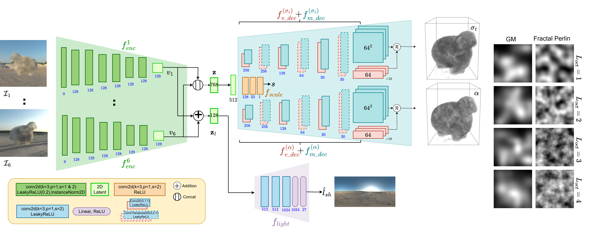
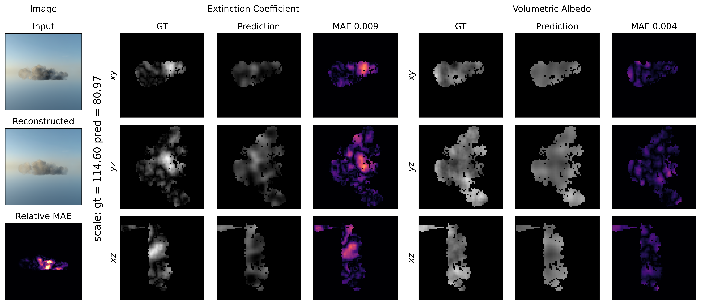
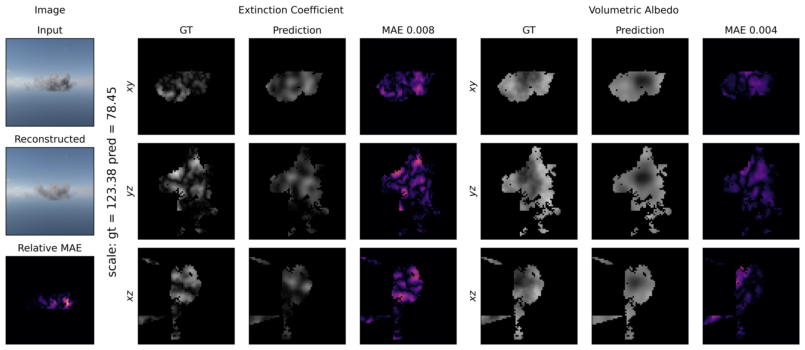
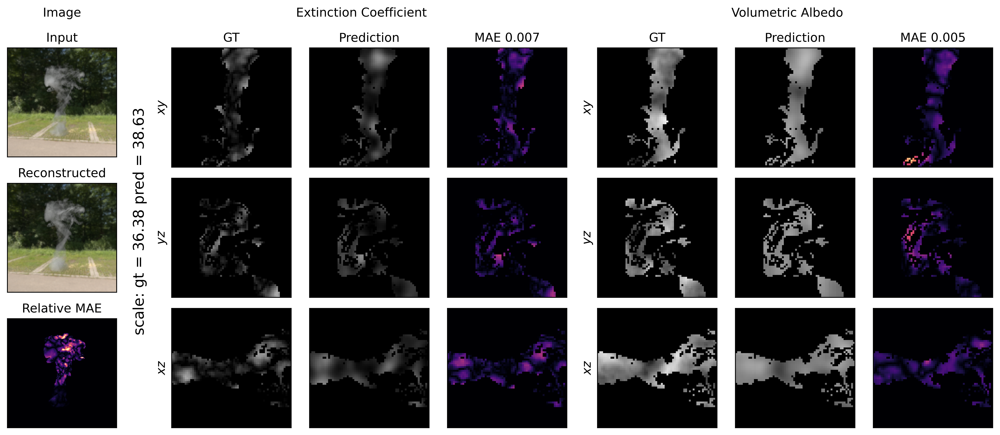
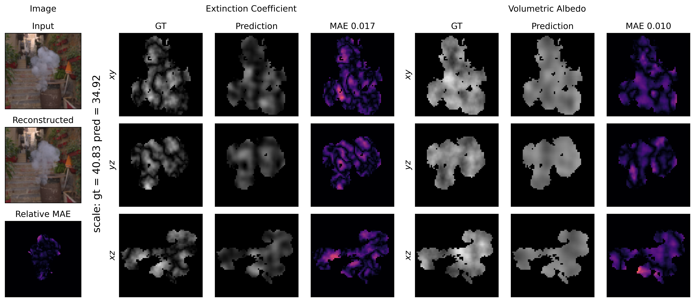

Abstract
Estimating scattering parameters of heterogeneous media from images is a severely under-constrained and challenging problem. Most of the existing approaches model BSSRDF either through an analysis-by-synthesis approach, approximating complex path integrals, or using differentiable volume rendering techniques to account for heterogeneity. However, only a few studies have applied learning-based methods to estimate subsurface scattering parameters, but they assume homogeneous media. Interestingly, no specific distribution is known to us that can explicitly model the heterogeneous scattering parameters in the real world. Notably, procedural noise models such as Perlin and Fractal Perlin noise have been effective in representing intricate heterogeneities of natural, organic, and inorganic surfaces. Leveraging this, we first create HeteroSynth, a synthetic dataset comprising photorealistic images of heterogeneous media whose scattering parameters are modeled using Fractal Perlin noise. Furthermore, we propose Tensorial Inverse Scattering (TensoIS), a learning-based feed-forward framework to estimate these Perlin distributed heterogeneous scattering parameters from sparse multi-view image observations. Instead of directly predicting the 3D scattering parameter volume, TensoIS uses learnable low-rank tensor components to represent the scattering volume. We evaluate TensoIS on unseen heterogeneous variations over shapes from the HeteroSynth test set, smoke and cloud geometries obtained from open-source realistic volumetric simulations, and some real-world samples to establish its effectiveness for inverse scattering. Overall, this study is an attempt to explore Perlin noise distribution, given the lack of any such well-defined distribution in literature, to potentially model real-world heterogeneous scattering in a feed-forward manner.
Network Architecture

Our feed-forward framework uses learnable low-rank tensor components to represent heterogeneous scattering volumes, enabling efficient inverse scattering parameter estimation from sparse multi-view observations.
Results on Heterosynth Dataset




Results on real world images